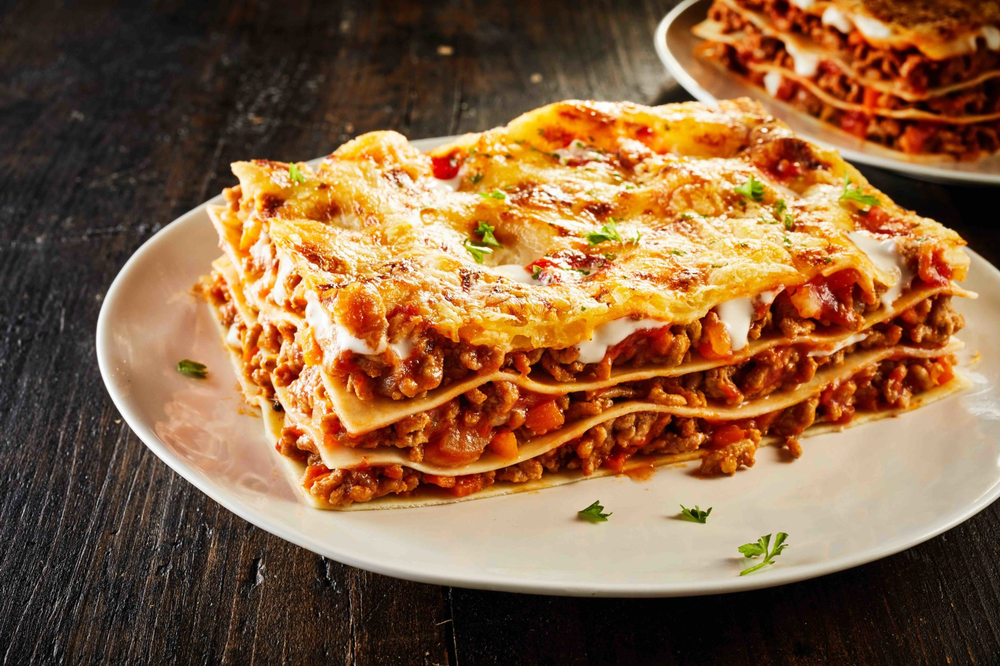

Lasagna bolognese

Lasagna by pastaficio
Lasagna bolognese, an Italian clasic dating back to the Middle Ages.
Lasagna bolognese is a dish loved by many around the world.
By following this guide the fabolous dish will be ready within one and a half hour.
Quick tip: it is recommended to prepare all the igredients before cooking,
to have the best possible experience.
The recipe for the oven dish below was created for 4 persons,
however this recipe was made to adabt to your needs.
Lastly the basic kitchen tools are needed and an overntray.
Have fun,
The Igredients (4p.)
- 1 box lasagna sheets
- 1L milk
- 50g butter
- 60g flour
- 400g grated cheese
- 400g minced meat
- 5 carrots
- 4 celery sticks
- 2 tomatoes
- 1 onion
- Peper and salt
- Thyme
- Nutmeg
- Laurel
- Tomato extract and coulis
Preperation
-
Prepare the bolognese saus. Wash and peel the carrots,
afterwards cut them into small pieces. Repeat this procedure for the celery sticks,
afterwards peel the onion and cut it into fine pieces.
Now let three igrendients cook on a light fire with the addition of butter.
-
Add the miced meat and stir the igredients.
-
Cut the tomatoes into pieces and add them togheter with the extract to the cooking pot.
-
Add the tomato coulis to the mixture and don't forget to use some salt, perper and thyme.
-
Put the lid on the pot and let the sauce cook.
-
Prepare the oven to 200˚C
-
Prepare the béchamel sauce. Mix butter and flour and cook until you smell a backed smell.
Now add milk until a desierd thickness is reached and add 200g cheese, nutmeg, salt and pepper.
-
Now assemble the lasagna in an oventray by combining the lasagna sheets and the bolognese and bechamel sauce.
additional cheese can be added on the last layer.
-
Let the Lasagna cook for 30min in the pre-heated oven.
“Bon appetit”
Lasagne recipe by VTM